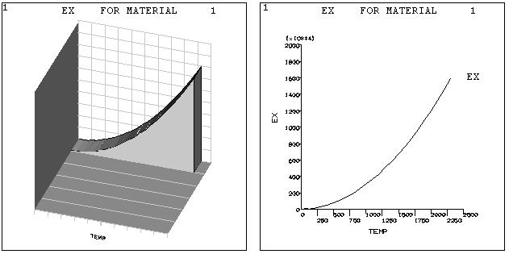

2.9 Creating Graphs
A graph is used to review the material property curves, trace the time-history response of the system, or examine the relationship between any two items in the analysis. ANSYS graphs can be either 2-D (X-Y) or 3-D (X-Y-Z, where Z must always be TIME). Figure 2.20 shows two typical graphs:

Fig. 2.20 Typical ANSYS Graphs
The most convenient way to create and control graph displays is by using the GUI operations available under Utility Menu> Plot and Utility Menu> PlotCtrls. Alternatively, graphics action and control commands can be used.
2.9.1 Graph Display Actions
Use Utility Menu> Plot> Materials to display linear material properties as a function of temperature. Use Utility Menu> Plot> Data Tables to display nonlinear data curves family of commands. Use Utility Menu> Plot> Array Parameters to display column vectors of array parameters. Use Main Menu> General Postproc> Fatigue> Store Stresses> Plot Stresses to display a stress item associated with a particular location and event versus loading number.
2.9.2 Changing the Specifications for Graph Displays
2.9.2.1 Changing the Type, Style, and Color of the Graph Display
The appearance of the graph display can be altered as follows:
Turning axis divisions (tick marks) on or off. This feature can be controlled using the command Utility Menu> PlotCtrls> Style> Graphs.
Setting line thickness for axes, grid lines or graph curve lines. Graph items can be accentuated by increasing their line thickness, using the AXIS, GRID, and CURVE labels using Utility Menu> PlotCtrls> Style> Graphs.
Turning the grid on or off (in the XY plane). A grid can be added to the graph displays, using Utility Menu> PlotCtrls> Style> Graphs. A grid can be either a full grid or a partial grid.
Producing a dashed tolerance curve about the displayed curve. A range of data spread, tolerance, or uncertainty can be indicated on the graph curves using Main Menu> TimeHist Postpro> Settings> Graph.
Changing the color of curves (and color-filled areas under curves). The CURVE label on the Utility Menu> PlotCtrls> Style> Colors> color type allows to control the color of each curve in the graph.
2.9.2.2 Labeling the Graph
Labeling the axes. The X and Y axes can be labelled using Utility Menu> PlotCtrls> Style> Graphs.
Labeling the curves. For POST26 plotted-variable graphs, the labels applied to the curves are established choosing: Main Menu> TimeHist Postpro> Define Variables or Main Menu> TimeHist Postpro> Elec&Mag> Circuit> Define Variables.
Adding user-defined graphics and text. Extra graphics and text can be added to the displays using the annotation functions by choosing Utility Menu> PlotCtrls> Annotation.